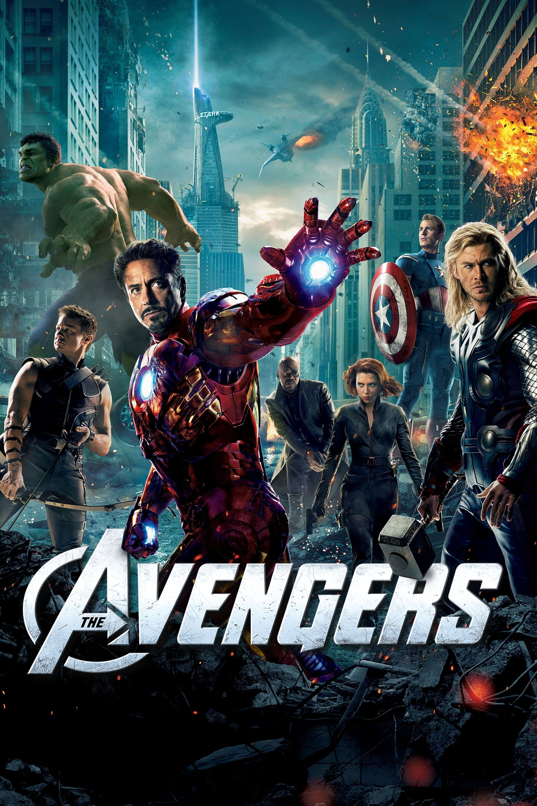
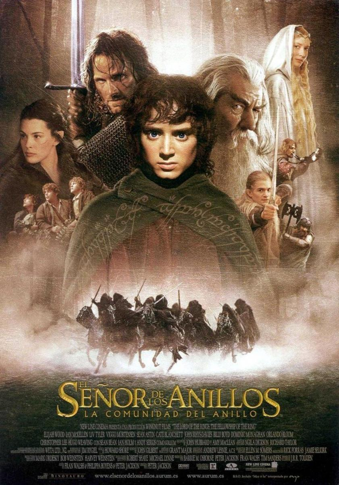

<html></html>
    <head>
        <meta charset='utf-8'>
        <title>Manual HTML CSS</title>
        <link rel="stylesheet" type='text/css' href='css/estilo12.css'>
        <script src="scripts/actions.js"></script> 
        <link rel="stylesheet" href="https://maxcdn.bootstrapcdn.com/bootstrap/4.5.2/css/bootstrap.min.css">
        <script src="https://code.jquery.com/jquery-3.5.1.slim.min.js"></script>
        <script src="https://cdn.jsdelivr.net/npm/@popperjs/core@2.9.2/dist/umd/popper.min.js"></script>
    </head>
    <body>
        <div class="div1">
            
        </div>
        <div class="div2">

        </div>
        <br>
        <header>
            <section id="section-contenido">          
            <div id="miCarrusel" class="carousel slide" data-ride="carousel">
                <div class="carousel-inner">
                    <div class="carousel-item active">
                        
                        <div class="carousel-caption d-none d-md-block">
                        </div>
                    </div>
                    <div class="carousel-item">
                        
                        <div class="carousel-caption d-none d-md-block">
                        </div>
                    </div>
                    <div class="carousel-item">
                        
                        <div class="carousel-caption d-none d-md-block">
                        </div>
                    </div>
                    <div class="carousel-item">
                        
                        <div class="carousel-caption d-none d-md-block">
                        </div>
                    </div>
                    <div class="carousel-item"></div>
                        
                        <div class="carousel-caption d-none d-md-block">
                        </div>
                    </div>
                </div>
                <a class="carousel-control-prev" href="#miCarrusel" role="button" data-slide="prev">
                    <span class="carousel-control-prev-icon" aria-hidden="true"></span>
                    <span class="sr-only">Anterior</span>
                </a>
                <a class="carousel-control-next" href="#miCarrusel" role="button" data-slide="next">
                    <span class="carousel-control-next-icon" aria-hidden="true"></span>
                    <span class="sr-only">Siguiente</span>
                </a>
            </div>
            </section>        
        </header>
        <br>
        <nav>
            <ul>
                <li><a href="index.html"> Inicio </a>      </li>
                <li><a href="evolucion.html"> Evolución </a>       </li>
                <li><a href="amazon.html"> Amazon </a>       </li>
                <li><a href="form.html"> Formulario </a>      </li> 
                <li><a href="listas.html"> Listas </a>      </li> 
                <li><a href="columnas.html"> Columnas </a>       </li>
                <li><a href="videoaudio.html"> Video-Audio</a>      </li> 
                <li><a href="animacio.html"> Animaciones </a>      </li> 
                <li><a href="svg.html"> SvG </a>      </li>
                <li><a href="contenido.html"> Contenido </a>      </li> 
            </ul>
        </nav>
        <br>
        <section>
            <h1> Welcome to Contenido </h1>
            <p>
                Las listas son muy útiles cuando queremos ofrecer una lista de elementos, palabras, frases o enlaces uno debajo del otro. Si estos elementos van encabezados por una bolita o un cuadrado son listas no ordenadas, si por el contrario van encabezados por números (correlativos: 1, 2...), letras ordenadas alfabeticamente (A, B...) o números romanos (I, II...) son listas ordenadas.
                Así, para crear listas utilizamos dos etiquetas.
                ul y ul para listas no ordenadas (señaladas por bolitas o cuadrados).
                ol y ol para listas ordenadas (señaladas por números o letras).
                En ambos casos, cada uno de los términos o elementos (ordenados o no) que van a componer la lista se deben encerrar entre las etiquetas li y li.
                Para mostrar algunos ejemplos vamos a utilizar la muy útil, interesante, actual, cónica y boreal lista de los Reyes Godos recortada en versión remix.
            </p>
            <h1>Mis Películas Favoritas</h1>
    
            <h2>Listas desordenadas</h2>
            <ul class="unordered-list">
                <li> 
                    
                    <p>Rápido y furioso	se estrenó el 22 de junio de 2001 y dura 107 minutos</p>
                </li>
                <li>
                    
                    <p>The Avengers se estrenó el 11 de abril de 2012 y dura 143 minutos</p>
                </li>
                <li>
                    
                    <p>Intensamente 2 se estrenó el 14 de junio de 2024 y dura 96 minutos</p>
                </li>
            </ul>
        </section>
        <section>
            <h2>Listas Ordenadas</h2>
            <ol class="ordered-list">
                <li>
                    
                    <p>1. La Comunidad del Anillo, se estrenó el 19 de diciembre de 2001 y dura 178 minutos</p>
                </li>
                <li>
                    
                    <p>2. Las dos torres, se estrenó el 18 de diciembre de 2002 y dura 179 minutos</p>
                </li>
                <li>
                    
                    <p>3. El retorno del Rey, se estrenó el 17 de diciembre de 2003 y dura 200 minutos</p>
                </li>
            </ol>
        </section>
        <br>
        <footer class="footer">
            <div class="footer-container">
                <div class="footer-section about">
                    <h3>Sobre mí</h3>
                    <p>Estudiante de Desarrollo de Software del Colegio Mayor del Cauca</p>
                </div>
                <div class="footer-section contact">
                    <h3>Contacto</h3>
                    <ul>
                        <li><a href="">paulamunoz@unimayor.edu.co</a></li>
                        <li><a href="">+57 310 543 8345</a></li>
                    </ul>
                </div>
                <div class="footer-section social">
                    <h3>Redes Sociales</h3>
                    <ul>
                        <li><a href="https://facebook.com" target="_blank">Facebook</a></li>
                        <li><a href="https://twitter.com" target="_blank">Twitter</a></li>
                        <li><a href="https://instagram.com" target="_blank">Instagram</a></li>
                    </ul>
                </div>
            </div>
            <div class="footer-bottom">
                <p>&copy; 2024 Paula Andrea Muñoz Arias. Todos los derechos reservados.</p>
            </div>
        </footer>
        <script src="https://code.jquery.com/jquery-3.5.1.slim.min.js"></script>
        <script src="https://cdn.jsdelivr.net/npm/@popperjs/core@2.5.3/dist/umd/popper.min.js"></script>
        <script src="https://stackpath.bootstrapcdn.com/bootstrap/4.5.2/js/bootstrap.min.js"></script>
    </body>
</html>